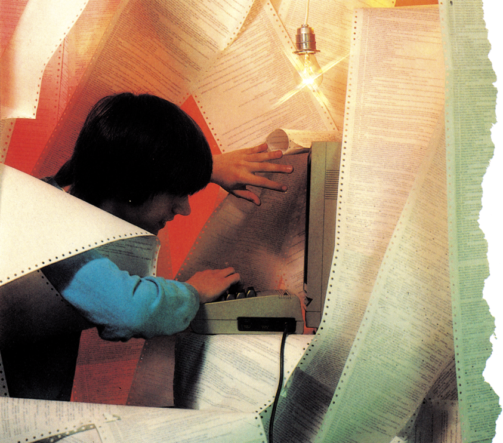
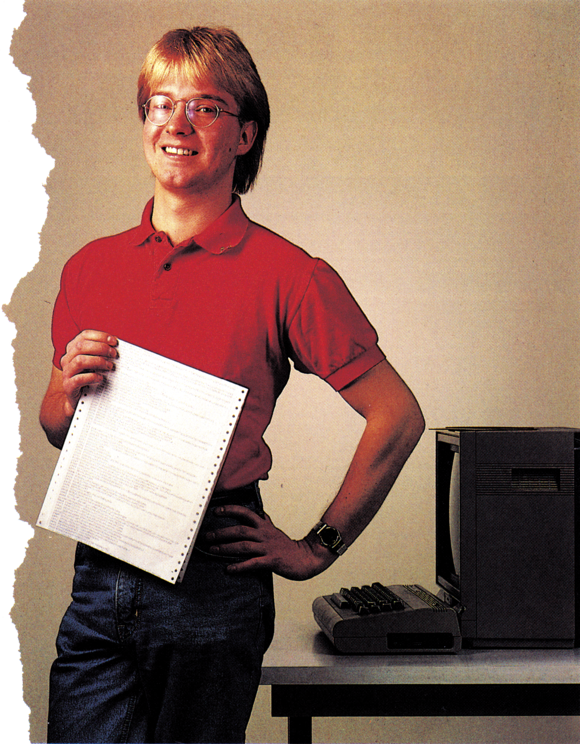

Alles über Programmierhilfen
Was es an Programmierhilfen gibt, was sie machen, wie sie funktionieren und was sie leisten, geht in der Vielzahl der Tools oft ins Unklare. Wir wollen Ihnen hier eine Orientierungshitfe geben.


Was sind Programmierhilfen? Es sind Programme, die den Umgang mit einem Computer erleichtern. Um es in ein Beispiel zu fassen:
Beim C 64 ist es in der Grundversion sehr schwierig, die hochauflösende Grafik anzusprechen. Mit einer entsprechenden Programmierhilfe ist es aber dann möglich, sich eine ganze Reihe von POKE-Befehlen zu ersparen und statt dessen den Computer mit einem Befehl zu der selben Funktion zu veranlassen.
Natürlich gibt es nicht nur im Bereich der Computer-Grafik Programmierhilfen, sondern zu fast allen Bereichen, die ein Computer abdeckt.
Am bekanntesten sind die sogenannten Basic-Erweite rungen, deren Zahl ins Uner meßliche strebt. Vor ein paar Jahren noch, ungefähr 1982, verstand man unter einer Basic-Erweiterung noch die einfache Einbindung von AUTO, RENUMBER und DELETE ins Betriebssystem. Man war schon froh, wenn man wenigstens eine Blockgrafik mit 50 x 80 Punkten ansprechen konnte. Schaut man sich die Erweiterungen heute an, so strotzen diese nur so von Befehlen. Hat eine Erweiterung 50 oder mehr Befehle, so ist das schon nichts Besonderes mehr. Ein paar der bekanntesten Erweiterungen mit ihrem Befehlssatz wollen wir einmal näher betrachten.
Die verbreitetste Basic-Erweiterung für den C 64 ist wohl Simons Basic. Es stellt dem Benutzer Befehle zur Verfügung, die den Umfang des ROM-Befehlsvorrats um vieles erweitern. Das Gesagte hat aber nicht nur für Simons Basic Gültigkeit. GWBasic, GRBasic und wie sie alle heißen, besitzen zum Großteil die selben Funktionen. Aber als erste Basic-Erweiterung (damals) für den C 64 hat Simons Basic doch das Vorrecht, vor allen anderen als typischer Vertreter einer Programmierhilfe unter Basic genannt zu werden.
Alt aber oho
Eine Hauptschwierigkeit der gängigen Interpreter liegt wohl ohne Zweifel in der Variablenverwaltung. Man hatjetzt die Möglichkeit, zum Beispiel mit lokalen und globalen Variablen zu arbeiten.
Das bedeutet, daß in einem Unterprogramm die gleichen Variablennamen wie im Hauptprogramm verwendet werden dürfen, die Werte der Variablen können aber jeweils andere Werte annehmen. Diese Art der Variablenverwaltung ist einer anderen Hochsprache entnommen, nämlich Pascal.
Wie weiterhin bekannt ist, läßt Pascal die sogenannte strukturierte Programmierung zu. Damit auch Nicht-Pascal-Benutzern diese Möglichkeit nicht verschlossen bleibt, stellt Simons Basic solche Funktionen bereit, wenn auch nicht im selben Umfang. Als Beispiel sei IF-THEN-ELSE oder die DO-UNTIL-Schleife erwähnt. In den meisten Basic-Dialekten kommt die Peripherie wie Drucker, Lightpens oder Joysticks meist zu kurz. Nicht anders ist es beim Basic des C 64. Um wirklich vernünftig mit diesen Ein- beziehungsweise Ausgabegeräten arbeiten zu können, ist ein enormer Programmieraufwand und eine gehörige Portion Wissen vonnöten.
Viele Befehle lassen Basic wachsen
Mit den meisten Basic-Erweiterungen bekommt der Anwender meist eine fertige Lösung in die Hand gedrückt, so daß er zum Beispiel mit einem Befehl den Joystick oder den Lightpen abfragen kann. Die Funktion
einer Hardcopy des Grafikbildschirms auf dem angeschlossenen Drucker ist so selbstverständlich wie die Speicherung selbsterstellter Bilder auf verschiedene Speichermedien.
Stichwort Grafik: Selbstverständlich kommt auch die Programmierung der hochauflösenden Grafik nicht zu kurz; im Gegenteil stellen einige der oben genannten Erweiterungen fast ausschließlich Befehle zu deren Programmierung bereit, so daß man sich die Frage stellen muß, ob sie überhaupt noch unter den Begriff Basic-Erweiterungen fallen.
Auf jeden Fall werden dem Programmierer hier vom einfachen Punkt setzen bis zum Kreisabschnitt zeichnen alle eventuellen Schwierigkeiten aus dem Weg geräumt, so daß man in der Lage ist, relativ schnell komplexe Grafiken zu erstellen, um diese zum Beispiel in eigene Programme einzubauen.
Spiele mit Sound — kein Problem
Auch an die Spiele-Programmierer wurde gedacht. Die unter Basic schwierige Handhabung der Sprites wird durch solche einfache Befehle wie Collision, Movesprite und ähnliches ersetzt.
Ein für die meisten Programmierer wichtiger Bereich ist die Klangerzeugung mit dem Computer. Auch hierbei geben die meisten Erweiterungen Schützenhilfe. Von der einfachen Tonerzeugung bis zum kompletten Einstellen sämtlicher Filter kann man alles antreffen. Dieser Bereich wird jedoch von den einzelnen Software-Herstellern unterschiedlich beurteilt, so daß sich in diesem Bereich die größten Unterschiede ergeben. Hier ist vor dem Kauf ein Blick ins Handbuch Gold wert, wenn man auf Musik besonderen Wert legt.
Die schon eingangs erwähnten Funktionen AUTO, RENUMBER und ähnliche sind durchwegs in allen Versionen enthalten und bedürfen wohl keiner eingehenden Erläuterung mehr. Wozu eigentlich so viele verschiedene Erweiterungen, wenn sie doch alle dasselbe tun können, werden Sie jetzt fragen. Recht haben Sie, aber die Betonung liegt auf dem, wie Sie es machen. Gemeint ist die Ausführungszeit. Hier sind die Unterschiede ganz gewaltig. Am deutlichsten kann man die Schnelligkeit einer Erweiterung bei der Ausführung von Leerschleifen testen. Die genauen Zeiten lassen sich durch Benchmark-Tests verdeutlichen.
Grafik für alle
Die zweite große Gruppe der Programmierhilfen sind die reinen Grafikerweiterungen. Sie befassen sich nur mit der Programmierung der hochauflösenden Grafik. Demzufolge sind sie auch meist schneller, da ihr Aufgabenbereich entsprechend kleiner gehalten ist.
Zur Grundausstattung solcher Grafikhilfen gehören Befehle zum Kreise zeichnen, Linien ziehen und Flächen ausfüllen. Aber auch eine Hardcopy findet man meist noch dabei. Auch werden sämtliche Funktionen der Sprite-Steuerung unterstützt, einige Programme bieten sogar die Möglichkeit, mehr als 8 Sprites gleichzeitig auf dem Bildschirm darzustellen.
In letzter Zeit findet man in diesen Erweiterungen auch immer häufiger Befehle, die in die anderen Bereiche wie Musik hineingehen, so daß auch hier eine genaue Abgrenzung immer schwerer fällt.
Komfort ist gefragt
Die Unterschiede in dieser Gruppe liegen hauptsächlich im Komfort, das heißt wie geschickt die Befehle aufgebaut sind und wie einfach sie sich anwenden lassen. In der Rechengeschwindigkeit gibt es auch Unterschiede, jedoch sind diese nicht so gravierend, als daß man sie gesondert berücksichtigen müßte.
Die letzte und fast mächtigste Gruppe der Programmierhilfen stellen die Programme dar, die, wenn auch nur im weitesten Sinne, etwas mit der Programmierung in Maschinensprache zu tun haben. In diese Gruppe fallen auch alle Programme, die sich mit der Programmierung der Floppy beschäftigen. Man kann diese Hauptgruppe in drei Untergruppen einteilen: Monitore, Assembler und Reassembler.
Gerade bei den Monitoren gab es seit dem Erscheinen des C 64 eine Unzahl von Neuentwicklungen, aber auch schon von früher bekannte Versionen, wie zum Beispiel der TIM (Terminal Interface Monitor) fand sich in einer angepaßten Version als NEWTIM wieder.
Trotz aller Neuheiten blieben die wesentlichen Funktionen eines Monitors erhalten. Dem Benutzer soll mit einem Monitor eine direkte Schnittstelle zur untersten Ebene der Computerprogrammierung gegeben werden. Er kann mit dieser Eingabehilfe direktim Speicher des Computers Änderungen vornehmen, Programme erstellen und diese austesten. Das alles geschieht aus Übersichtlichkeit im hexadezimalen Zahlensystem. Oft findet der Programmierer noch einen kleinen Assembler miteingebaut, dieser dient aber in den meisten Fällen nur dazu, irgendwelche Kleinigkeiten an schon bestehenden Programme zu ändern. Um längere Programme damit zu erstellen, fehlt jeglicher Komfort. Einige wenige Exemplare erlauben sogar, Änderungen auch im Speicher der Floppy vorzunehmen oder gar ganze Teile des Floppy-ROM in den Speicher des Computers zu schieben, um sie dort besser bearbeiten zu können.
Leider bieten die wenigsten Monitore die Möglichkeit, auf dem Drucker mitzuprotokollieren, ein oft wünschenswerter Zusatz. Eine Unterscheidung in Gut und Schlecht entfällt hier, da von der Ausstattung und Funktion her die Unterschiede so gering sind, daß man kaum einen Vergleich wagen kann.
Ganz anders sieht es in der Gruppe der Assembler aus, hier ist so ziemlich alles vertreten vom Mini-Assembler bis zum speichersprengenden 3-Pass-Makroassembler. Die Aufgabe aller Typen ist es, den symbolischen Code, auch Mnemonics genannt, in Maschinenbefehle umzusetzen. Dies geschieht je nach Typ in einem oder auch mehreren Durchläufen, den sogenannten »Passes«.
Einige Assembler erlauben das Definieren von Makros, das sind ganze Programme, die mit einem Namen aufgerufen werden und meist beliebig lang sein können. Man kann sich so eine Menge Arbeit sparen und ein Programm, das öfter in anderen Programmen vorkommt, mit einem Namen versehen und aufrufen, wenn es gebraucht wird. Das Programm wird dann entsprechend eingebaut.
Auch die Arbeit mit Label erspart Zeit und Aufwand. Labels sind Markierungen im Programm, die man dann von beliebiger Stelle aus anspringen kann, sei es von einem JUMP-Befehl aus oder von einem BRANCH-Befehl. Diese Labels können beliebig aussehen, meist sind alle ASCII-Zeichen erlaubt.
Alle Assembler werden vom eingebauten Bildschirmeditor voll unterstützt, meist unterscheidet sich die Eingabe des Programms nicht von der eines Basic-Programms; eventuell sind noch Zusatzfunktionen wie automatische Zeilennumerierung mit eingebaut.
Assembler für jedermann
Die Unterschiede bei den Assemblern liegen ganz klar im Bedienungskomfort und in der Leistungsfähigkeit. So muß der Anwender selbst entscheiden, welches Produkt er bevorzugt. Das hängt natürlich auch vom Fachwissen jedes einzelnen ab.
Die Gruppe der Reassembler bildet noch eine kleine Minderheit. Mit ihnen kann ein bereits bestehendes Maschinenprogramm wieder in einen Quelltext zurückgeführt werden. So lassen sich einfache Änderungen durchführen, ein Programm läßt sich dadurch auch leichter kommentieren. Man kann auch interessante Teile von Programmen leichter isolieren und in eigene Entwicklung mit übernehmen. Die Programme zur Manipulation der Floppy sollen auch nicht unberücksichtigt bleiben. Einige Entwicklungen darunter liefern ganz brauchbare Ergebnisse, einige stellen ein gar unersetzliches Arbeitsmittel dar, wenn es darum geht, gelöschte Daten wieder lesbar zu machen oder Fehler auf der Diskette auszumerzen. Es gibt noch eine weitere Art der Programmierhilfen, man muß besser sagen von Eingabehilfen. Gemeint sind die Checksummer. Diese Programme überprüfen eine eingegebene Zeile anhand einer Prüfsumme, die im Listing mit angegeben ist. So erspart man sich langwierige Fehlersuche und hat mehr Freude an abgedruckten Programmen.
Fest eingebunden
Wie schaffen es nun all diese Erweiterungen, ihren Platz im Betriebssystem zu finden? Die meisten Basic-Erweiterungen binden sich in die CHARACTER-GET-Routine des Betriebssystems ein und verzweigen daraus zu ihren eigenen Routinen, wenn sie auf einen der neuen Befehle stoßen. Platz finden sie im C 64 meist genug, sehr häufig wird Gebrauch vom sogenannten versteckten RAM gemacht. Dieser Speicherplatz, der parallel zum ROM liegt, wird im Normalfall nie gebraucht und dort nehmen die Erweiterungen zumindest keinen Basic-Speicherplatz weg.
Einige der Erweiterungen werden als Steckmodul angeboten, so daß beim Einschalten oder bei einem RESET das Programm gleich verfügbar ist.
Schnelligkeit ist ein wichtiges Kriterium
Nach welchen Gesichtspunkten soll man nun so eine Erweiterung anschaffen?
Entscheidend sind hier zum einen der eigentliche Verwendungszweck, zum anderen der Komfort und die Schnelligkeit. Gerade auf letzteres sollte man ganz besonders achten, vor allem wenn es sich um zeitintensive Aufgaben handelt, wie sie gerade bei Spielen mit bewegter Grafik anzutreffen sind. Auf jeden Fall aber hat man die Qual der Wahl, denn es sind wirklich genügend Produkte auf dem Markt, die nicht nur versprechen, das Letzte aus Ihrem Computer herauszuholen.
(Udo Reetz/og)